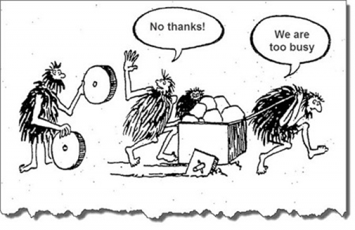

Common Knowledge
For Software Engineering Team
Created by Howard.Zuo / @右领军大都督
Background


But why


More Read
http://www.zhihu.com/question/35264845OS are different
We have to admit it
OSX VS Windows

IOS VS Android

Web is not all about front-end
Even backend developers, QAs has to have the common sense
URL

reuse
- copy & paste
- runtime
- development
Self Driven
We ain't The One
Use of Public Information
Like Google, MDN, Wikipedia
And following is important skill:
- Abstract
- Tokenization
For example
- How to [do sth] on/at/in [where]
- Possible to [do sth] on/at/in [where]
- Difference between [what-01] and [what-02]
All above patterns helps you to get the accurate answer
Busy !== Productivity
Dev !== PM
It's good thinking about UX, but remember that you are just not PM. Let right people do what they are really good at
Automation Testing
- reduce resource cost
- avoid risk
- shorten release cycle
No Silver Bullet
No matter what kinds of technologies and processes you introduce, you have to spend time learning them, find out the problems they solved, and know how to use them in work
Dev & QA
We are one team to take the responsibility of the product
We are not enemy